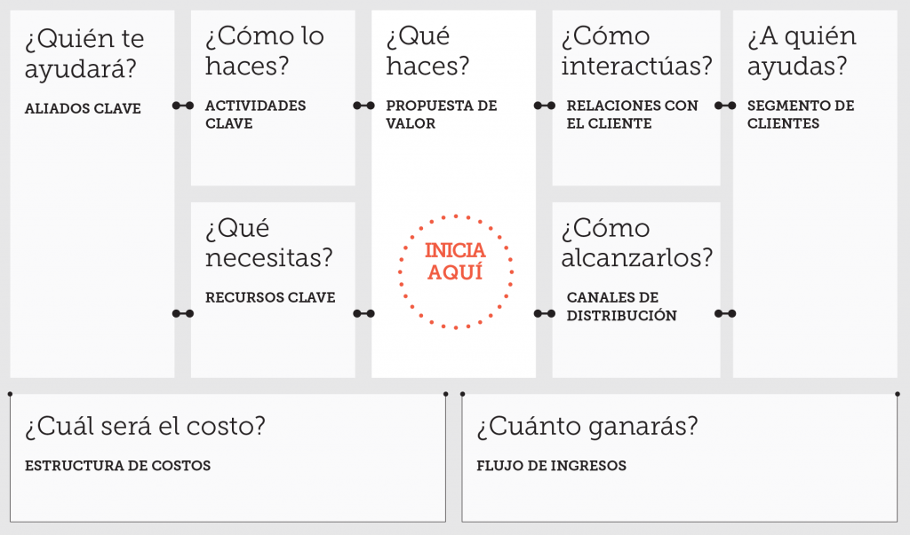

Busines Model Canvas.
El Busines Model Canvas (Lienzo de Modelo de Negocio en español) es un resumen de una página que
expone al mismo tiempo lo que haces (o quieres hacer), y lo qué debes hacer
para lograrlo, facilitando así una conversación estructurada alrededor de
la dirección y la estrategia, poniendo en evidencia las actividades y desafíos
cruciales que se relacionan con tu iniciativa y cómo se relacionan entre
ellos. Este formato visual, introducido originalmente por Osterwalder y
Pigneur, es útil tanto para organizaciones y negocios nuevos, como para los
ya existentes.
Ventajas
Permite hacernos una perspectiva del panorama en el que implementaremos nuestro proyecto, desarrollar nuevas iniciativas e identificar oportunidades mientras se vuelven más eficientes ilustrando
posibles compensaciones y alineando actividades. incita a reflexiones dentro de las actividades y
recursos individuales, mientras que la capacidad de completar un panorama
promueve ideas y perspectivas frescas acerca de cómo encajan estas piezas.
Esta estructura también ayuda a mantener las discusiones grupales más
enfocadas y poner a todos bajo la misma línea.
Creado por Osterwalder A., Pigneur Y. (2010) Business Model Generation.
Para hacer un Lienzo de Modelo de Negocio, la forma más
fácil de empezar es anotar lo que se quiere hacer. Esto ayuda
a mantener el enfoque en tu meta principal mientras llenas los
otros bloques del lienzo. A partir de ahí puedes construir sobre
ese objetivo y ver cómo puede ser logrado añadiendo detalles de
otras actividades y recursos que tienes.
Empieza desde un lienzo en blanco y agrega notas con palabras
clave en cada bloque del lienzo. Si usas post it para esto, puedes
cambiar las ideas de lugar mientras llenas cada bloque del lienzo.
Puede ser que quieras usar colores distintos para los diferentes
elementos relacionados a un segmento específico de clientes.
Sin embargo, ten cuidado de no enamorarte de tu primera idea
y en su lugar boceta alternativas de modelos de negocio para el
mismo producto, servicio o tecnología.
Puedes incluso practicar y aprender nuevas formas de hacer
las cosas planificando nuevos/innovadores modelos de negocio
que encuentres o admires.

Fuente: http://es.diytoolkit.org/tools/business-model-canvas/.